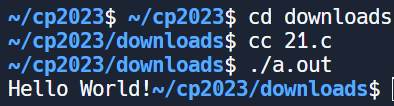
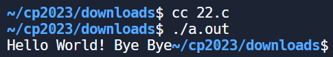
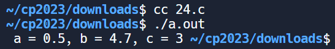
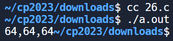
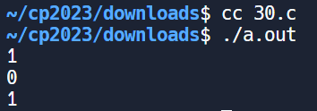
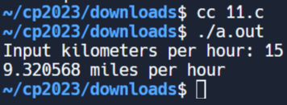
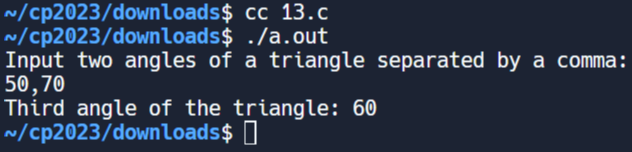

w16 <<
Previous Next >> ANSIC
c_EX
(1)C 標準輸出函數
#include <stdio.h>
void main()
{
/* 印出 Hello */
printf("Hello World!");
}

(2 )C 標準輸出函數
#include <stdio.h>
int main()
{
/* 印出 Hello World! Bye Bye */
printf("Hello World! ");
printf("Bye ");
printf("Bye");
return 0;
}

(3)c變數宣告
#include <stdio.h>
int main()
{
int a = 1;
int A = 8;
int b = 2, c;
c = A - a + b;
/* 輸出 a, A, b, c 到螢幕 */
printf( "a = %d, A = %d, b = %d, c = %d ", a, A, b, c );
return 0;
}

(4)C 的浮點數運算
#include <stdio.h>
void main()
{
float a = 0.5;
double b = 1.2;
int c = 3;
b = b + a + c;
/* 輸出 a, b, c 到螢幕 */
printf( " a = %3.1f, b = %3.1f, c = %d ", a ,b, c );
}

(5)C 字元型態
#include <stdio.h>
int main()
{
char x, y;
x = 'a';
y = (char)97;
/* 輸出 x, y, x, 最後一個是以 ASCII 值顯示 y */
printf( " x = %c, y = %c, ASCII of y = %d", x, y, y );
return 0;
}

(6)常數數字表示法
#include <stdio.h>
int main() {
int a = 64;
int b = 0x40;
long c = 64L;
printf("%d,%d,%ld", a, b, c); // 使用 %ld 來打印 long 整數型別的變數 c
return 0;
}

(7)算術運算元
#include<stdio.h>
int main()
{
int a,b;
a = 10; b = 3;
printf( "%d \n", a * b );
printf( "%d \n", a / b );
printf( "%d \n", a + b );
printf( "%d \n", a - b );
printf( "%d \n", a % b );
return 0;
}

(8)位元運算元
#include<stdio.h>
void main()
{
int a,b;
a = 15;
b = 1;
printf("%d \n", a | b ); /* a OR b */
printf("%d \n", a & b ); /* a AND b */
printf("%d \n", a ^ b ); /* a XOR b */
printf("%d \n", a << 1 ); /* a 位元左移 1 位 */
printf("%d \n", a >> 1 ); /* a 位元右移一位 */
printf("%d \n", ~a ); /* A 的補數運算 */
}

(9)邏輯運算元
#include <stdio.h>
void main()
{
int a;
a = 3;
printf("%d\n", !a );
a = 0;
printf("%d\n", !a );
}

(10)Logical AND
#include <stdio.h>
void main()
{
printf("%d\n", 1 && 3 );
printf("%d\n", 0 && 0 );
printf("%d\n", 2 && 2 );
}

(11)
#include <stdio.h> // Include standard input/output library
int test(int x, int y); // Declare the function 'test' with two integer parameters
int main(void)
{
// Call the function 'test' with arguments 1 and 2 and print the result
printf("%d", test(1, 2));
// Print a newline for formatting
printf("\n");
// Call the function 'test' with arguments 2 and 2 and print the result
printf("%d", test(2, 2));
}
// Function definition for 'test'
int test(int x, int y)
{
// Conditional expression: If x is equal to y, return (x + y) multiplied by 3, otherwise return x + y
return x == y ? (x + y) * 3 : x + y;
}

(12)
#include <stdio.h>
int main()
{
int ang1, ang2, ang3; /* Three angles of a triangle */
/* Read two angles of the triangle from the user separated by a comma */
printf("Input two angles of the triangle separated by a comma: ");
// Check the return value of scanf
if (scanf("%d, %d", &ang1, &ang2) != 2) {
// If the expected number of inputs is not read, print an error message
printf("Error: Invalid input format.\n");
return 1; // Return a non-zero value to indicate an error
}
ang3 = 180 - (ang1 + ang2); /* Calculate the third angle */
printf("Third angle of the triangle: %d\n", ang3);
return 0;
}

(13)
#include <stdio.h> // Include standard input/output library
int test(int x, int y); // Declare the function 'test' with two integer parameters
int main(void)
{
// Call the function 'test' with arguments 25 and 5, and print the result
printf("%d", test(25, 5));
// Print a newline for formatting
printf("\n");
// Call the function 'test' with arguments 20 and 30, and print the result
printf("%d", test(20, 30));
// Print a newline for formatting
printf("\n");
// Call the function 'test' with arguments 20 and 25, and print the result
printf("%d", test(20, 25));
}
// Function definition for 'test'
int test(int x, int y)
{
// Return 1 (true) if any of the following conditions are true:
// 1. x is equal to 30
// 2. y is equal to 30
// 3. the sum of x and y is equal to 30
return x == 30 || y == 30 || (x + y == 30);
}

(14)
#include <stdio.h> // Include standard input/output library
#include <stdlib.h> // Include standard library for absolute value function
int test(int x); // Declare the function 'test' with an integer parameter
int main(void)
{
// Call the function 'test' with argument 103 and print the result
printf("%d", test(103));
// Print a newline for formatting
printf("\n");
// Call the function 'test' with argument 90 and print the result
printf("%d", test(90));
// Print a newline for formatting
printf("\n");
// Call the function 'test' with argument 89 and print the result
printf("%d", test(89));
}
// Function definition for 'test'
int test(int x)
{
// Check if the absolute difference between 'x' and 100 is less than or equal to 10,
// or if the absolute difference between 'x' and 200 is less than or equal to 10.
// Return 1 (true) if either condition is true, otherwise return 0 (false).
if (abs(x - 100) <= 10 || abs(x - 200) <= 10)
return 1;
return 0;
}
(15)
#include <stdio.h> // Include standard input/output library
#include <stdlib.h> // Include standard library for modulo operation
int test(int n); // Declare the function 'test' with an integer parameter
int main(void)
{
// Call the function 'test' with argument 3 and print the result
printf("%d", test(3));
// Print a newline for formatting
printf("\n");
// Call the function 'test' with argument 14 and print the result
printf("%d", test(14));
// Print a newline for formatting
printf("\n");
// Call the function 'test' with argument 12 and print the result
printf("%d", test(12));
// Print a newline for formatting
printf("\n");
// Call the function 'test' with argument 37 and print the result
printf("%d", test(37));
}
// Function definition for 'test'
int test(int n)
{
// Check if 'n' is divisible by 3 or if 'n' is divisible by 7.
// Return 1 (true) if either condition is true, otherwise return 0 (false).
return n % 3 == 0 || n % 7 == 0;
}

(16)
#include <stdio.h> // Include standard input/output library
#include <stdlib.h> // Include standard library for absolute value function
int test(int temp1, int temp2); // Declare the function 'test' with two integer parameters
int main(void)
{
// Call the function 'test' with arguments 120 and -1, and print the result
printf("%d", test(120, -1));
// Print a newline for formatting
printf("\n");
// Call the function 'test' with arguments -1 and 120, and print the result
printf("%d", test(-1, 120));
// Print a newline for formatting
printf("\n");
// Call the function 'test' with arguments 2 and 120, and print the result
printf("%d", test(2, 120));
}
// Function definition for 'test'
int test(int temp1, int temp2)
{
// Check if either of the following conditions are true:
// 1. temp1 is less than 0 and temp2 is greater than 100
// 2. temp2 is less than 0 and temp1 is greater than 100
// Return 1 (true) if either condition is true, otherwise return 0 (false).
return temp1 < 0 && temp2 > 100 || temp2 < 0 && temp1 > 100;
}

(17)
#include <stdio.h> // Include standard input/output library
#include <stdlib.h> // Include standard library for absolute value function
int test(int x, int y); // Declare the function 'test' with two integer parameters
int main(void)
{
// Call the function 'test' with arguments 100 and 199, and print the result
printf("%d", test(100, 199));
// Print a newline for formatting
printf("\n");
// Call the function 'test' with arguments 250 and 300, and print the result
printf("%d", test(250, 300));
// Print a newline for formatting
printf("\n");
// Call the function 'test' with arguments 105 and 190, and print the result
printf("%d", test(105, 190));
}
// Function definition for 'test'
int test(int x, int y)
{
// Check if either of the following conditions are true:
// 1. x is between 100 and 200 (inclusive)
// 2. y is between 100 and 200 (inclusive)
// Return 1 (true) if either condition is true, otherwise return 0 (false).
return (x >= 100 && x <= 200) || (y >= 100 && y <= 200);
}

(18)
#include <stdio.h> // Include standard input/output library
#include <stdlib.h> // Include standard library for additional functions
// Declare the function 'test' with three integer parameters
int test(int x, int y, int z);
int main(void)
{
// Call the function 'test' with arguments 11, 20, and 12, and print the result
printf("%d", test(11, 20, 12));
// Print a newline for formatting
printf("\n");
// Call the function 'test' with arguments 30, 30, and 17, and print the result
printf("%d", test(30, 30, 17));
// Print a newline for formatting
printf("\n");
// Call the function 'test' with arguments 25, 35, and 50, and print the result
printf("%d", test(25, 35, 50));
// Print a newline for formatting
printf("\n");
// Call the function 'test' with arguments 15, 12, and 8, and print the result
printf("%d", test(15, 12, 8));
}
// Function definition for 'test'
int test(int x, int y, int z)
{
// Check if either of the following conditions are true for any of the variables (x, y, or z):
// 1. The variable is between 20 and 50 (inclusive)
// Return 1 (true) if any condition is true, otherwise return 0 (false).
return (x >= 20 && x <= 50) || (y >= 20 && y <= 50) || (z >= 20 && z <= 50);
}

(19)
#include <stdio.h> // Include standard input/output library
#include <stdlib.h> // Include standard library for additional functions
// Declare the function 'test' with two integer parameters
int test(int x, int y);
int main(void)
{
// Call the function 'test' with arguments 20 and 84, and print the result
printf("%d", test(20, 84));
// Print a newline for formatting
printf("\n");
// Call the function 'test' with arguments 14 and 50, and print the result
printf("%d", test(14, 50));
// Print a newline for formatting
printf("\n");
// Call the function 'test' with arguments 11 and 45, and print the result
printf("%d", test(11, 45));
// Print a newline for formatting
printf("\n");
// Call the function 'test' with arguments 25 and 40, and print the result
printf("%d", test(25, 40));
}
// Function definition for 'test'
int test(int x, int y)
{
// Check if either of the following conditions are true:
// 1. x is less than or equal to 20 OR y is greater than or equal to 50
// 2. x is less than or equal to 20 OR y is greater than or equal to 50
// If any of the conditions are true, return 1 (true). Otherwise, return 0 (false).
return (x <= 20 || y >= 50) || (x <= 20 || y >= 50);
}

(20)
#include <stdio.h> // Include standard input/output library
#include <stdlib.h> // Include standard library for additional functions
// Declare the function 'test' with two integer parameters
int test(int x, int y);
int main(void)
{
// Call the function 'test' with arguments 78 and 95, and print the result
printf("%d", test(78, 95));
// Print a newline for formatting
printf("\n");
// Call the function 'test' with arguments 95 and 95, and print the result
printf("%d", 測試(95, 95));
// 列印換行符號以進行格式化
printf("\n");
// 使用參數 99 和 70 呼叫函數“test”，並列印結果
printf("%d", 測試(99, 70));
}
// 'test' 的函數定義
int 測試（int x，int y）
{
整數 n = 100；// 定義變數 'n' 並為其賦值 100
int val = abs(x - n); // 計算 'x' 和 'n' 之間的絕對差並將其儲存在 'val' 中
int val2 = abs(y - n); // 計算 'y' 和 'n' 之間的絕對差並將其儲存在 'val2' 中
// 檢查「val」是否等於「val2」。如果為 true，則傳回 0。否則，如果 'val' 小於 'val2'，則傳回 'x'，否則傳回 'y'。
返回 val == val2 ？0 : (val < val2 ? x : y);
}

w16 <<
Previous Next >> ANSIC